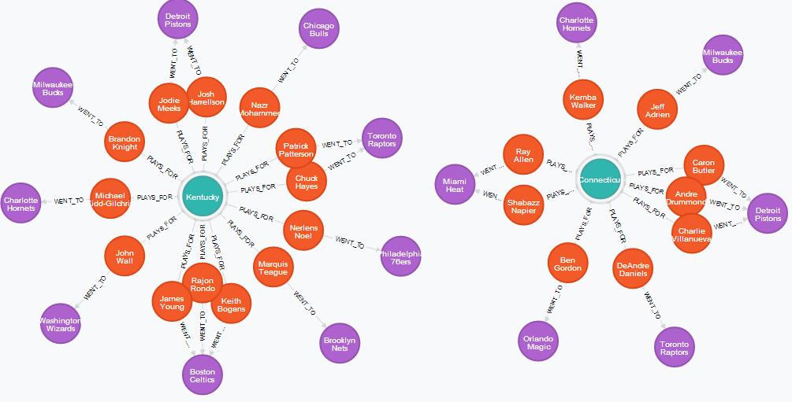

Is there any relation between a basketball player's college team and their NBA destination? Do players from the same college recruit each other? A running joke in sports media is how Jordan only recruits players from UNC for his Charlotte Hornets.
Using a graph database, in this case Neo4j, we visualize player-college-team relations and gather insights into the above questions.
To begin, a data set of nba players, their current teams, and their college teams was needed. I scraped the current player list for the Eastern Conference from ESPN. However, I did this in the peak of the free agency period (right after Lebron and Melo signed) so some of these may be off by a bit.
Using the CSV Import function to input data, we end up with a graph of 358 nodes and 514 relationships. Here is a subset of the graph showing college connections for the Hornets organization:
So, it looks like MJ likes Indiana even more than UNC. Obviously, not many concrete conclusions can be drawn from a data set this size, but it is a nice visualization.
Doing it the opposite way leads to nicer graphs with more insight. So instead, let us graph by college, not by team. So, if we look at the two college ranked highest on ESPN, we get the following graphs:
Conclusions: Graphing college-team relations, but we need more information for it to be interesting. Next steps will involve seeing which players were in college at the same time and which colleges are represented in teams' front offices.
For those interested, the CSV file and relevant Cypher queries can be found on my Github under the "Blog Code" repo.